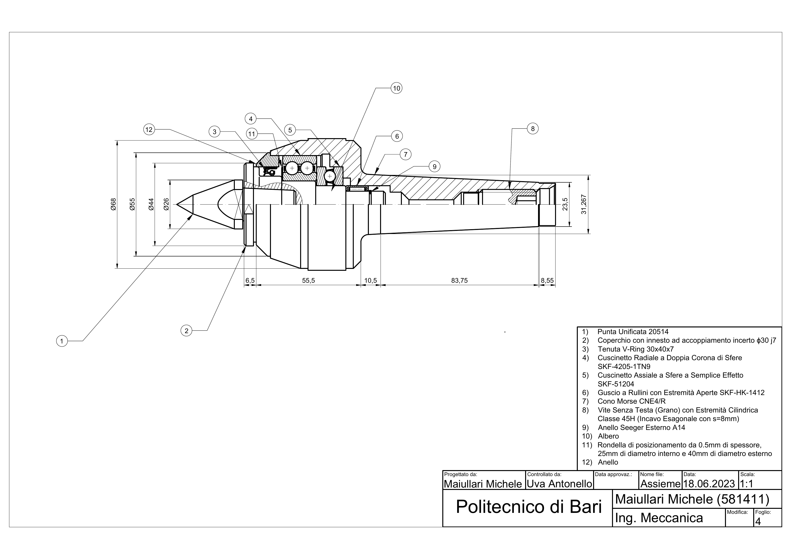
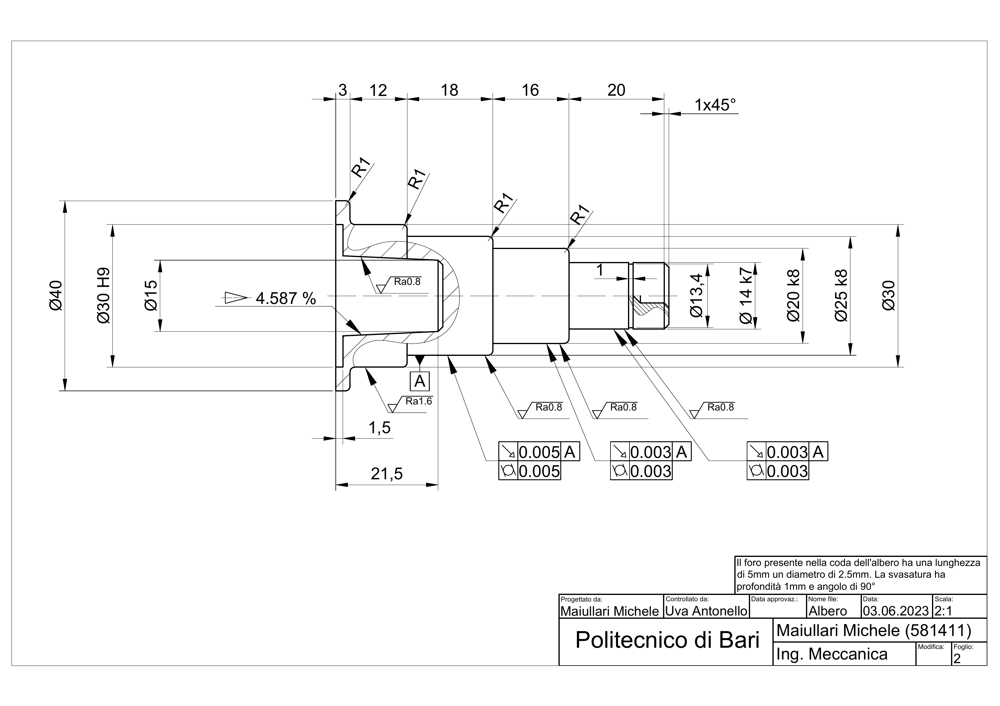
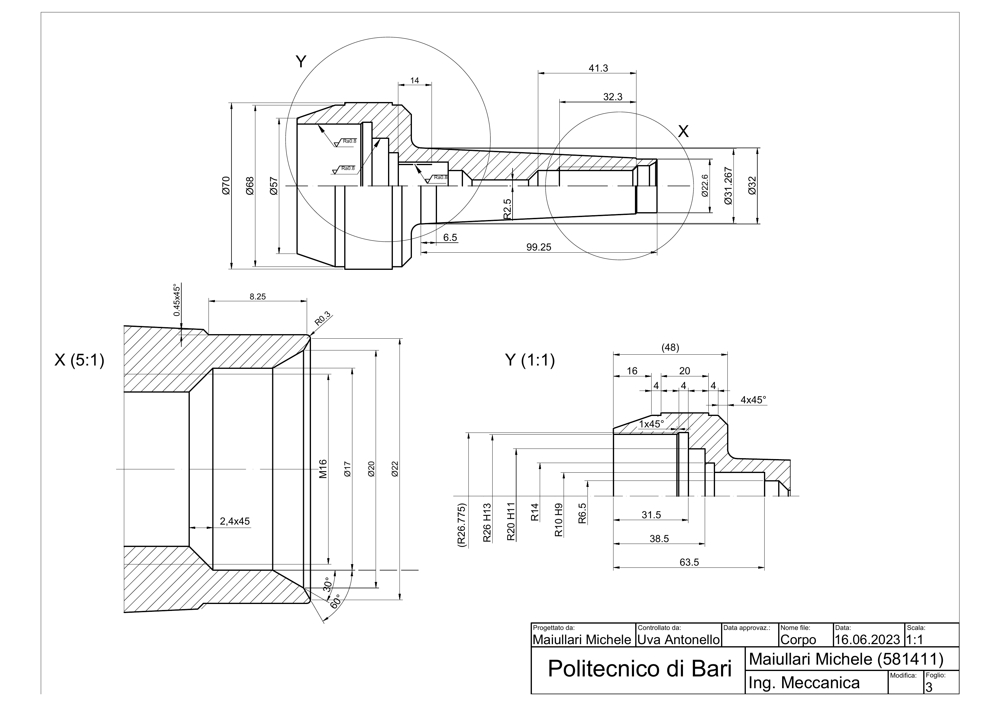
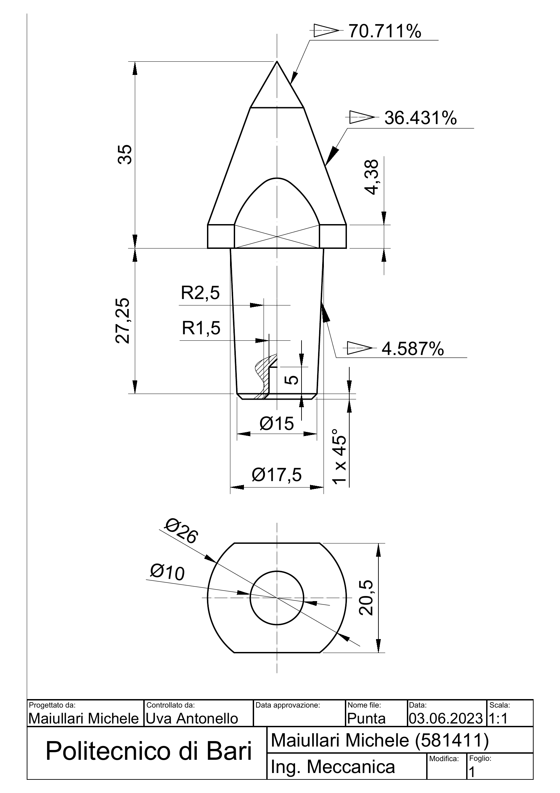

Technical Representation of Machines — Politecnico di Bari · June 2023
2D Technical Drafting: Lathe Rotating Tailstock
Complete 2D manufacturing documentation for a rotating centre for a lathe tailstock: three component sheets and one assembly sheet, drafted in AutoCAD with ISO fits, GD&T runout control and a catalogue-based bill of materials — a documentation package ready to be handed to a machine shop as-is.
Overview
A rotating tailstock centre looks simple and is anything but: a 60° working point spinning on bearings inside a Morse-taper body, where every fit, runout and roughness value decides whether the point runs true or wobbles the workpiece. The assignment was to produce the complete manufacturing documentation for such a centre, designed to support medium loads on a lathe: detailed 2D drawings of every individual component plus the final assembly, dimensioned and toleranced to workshop standards.
The deliverable is a four-sheet package in AutoCAD (DWG, with plotted PDF copies): the hardened point, the shaft, the body, and the fully sectioned assembly with a twelve-item bill of materials built on SKF and UNI catalogue components.
The Assembly
The rotating centre mounts in the tailstock through a Morse taper cone (CNE4/R) and carries the load chain that makes the point rotate with the workpiece: a double-row deep-groove ball bearing for the radial reaction, a thrust ball bearing for the axial reaction of the 60° point, and a drawn-cup needle roller shell guiding the nose. A V-Ring lip seal protects the front bearing chamber, an external retaining ring and a positioning washer locate the rotating group axially, and a class 45H grub screw locks the adjustment.
- Standardised lathe centre point — UNI 20514
- Cover with drive spigot, loose coupling Ø30 j7
- V-Ring lip seal 30×40×7
- Double-row deep-groove ball bearing — SKF 4205-1TN9
- Thrust ball bearing — SKF 51204
- Drawn-cup needle roller shell, open ends — SKF HK-1412
- Morse taper cone — CNE4/R
- Grub screw with cylindrical end, class 45H, hex socket s = 8 mm
- External retaining ring (Seeger) — A14
- Shaft
- Positioning washer — 0.5 mm thick, Ø25 ID × Ø40 OD
- Ring
Selecting catalogue bearings and standard seals instead of custom parts is a deliberate documentation decision: every load-carrying component is replaceable, and the drawing only has to guarantee the interfaces — which is exactly what the fits and tolerances below do.
Component Drawings
The point (sheet 1, 1:1). The UNI 20514 centre point with its 60° working cone, whose flanks are dimensioned as percentage-slope cones, filleted R2.5 / R1.5 at the transitions and chamfered 1×45° on the Ø15 shank. The rear end view documents the flatted Ø26 drive interface with the central Ø10 bore.
The shaft (sheet 2, 2:1). The most tolerance-dense drawing of the set: stepped seats on Ø14 k7, Ø20 k8 and Ø25 k8 for the press-fitted rotating group, an Ø30 H9 bore, the Ø13.4 groove for the Seeger A14 retaining ring, and the 4.587% cone. Runout is controlled at 0.003–0.005 mm against a single datum on the functional seats, with Ra 0.8 on the bearing-relevant surfaces and Ra 1.6 elsewhere. A technical note on the sheet fully defines the tail hole (Ø2.5 × 5 mm deep with a 90°, 1 mm countersink) so nothing is left to the machinist's interpretation.
The body (sheet 3, 1:1). The housing that carries everything: flange diameters up to Ø70, an M16 thread, and the Morse No. 4 socket dimensioned at its standard large-end diameter (Ø31.267). The full section Y–Y carries the bore tolerance classes for every seat, and the groove–undercut geometry is blown up in detail X at 5:1 (R0.3, 0.45×45° chamfer). Non-functional dimensions are quoted as reference values in brackets, e.g. (48).
GD&T and Fit Philosophy
- Rotating seats in press fit — k-class fits (k7, k8) on the shaft seats carrying the bearings and the point group, so the inner rotating parts cannot creep under load.
- Stationary and clearance interfaces in H-class — H9 / H11 / H13 bores where parts slide or simply locate, with the loose coupling on the cover spigot called out as Ø30 j7.
- Runout before size — 0.003–0.005 mm runout tolerances to a single datum on the rotating seats, because on a live centre the geometric truth of the shaft matters more than any single diameter.
- Roughness matched to function — Ra 0.8 on bearing and running surfaces, Ra 1.6 on the remaining machined faces, nothing finer than needed: tolerance costs money.
Results
- Delivered a four-sheet, workshop-ready documentation package (three components + assembly) in DWG with plotted PDF copies, on the standard Politecnico di Bari title block.
- Documented a twelve-item bill of materials on standard SKF and UNI components, with balloon references cross-checked against the sectioned assembly view.
- Applied a complete, internally consistent tolerance strategy: ISO fits on every mating surface, runout control to a single datum, and surface roughness graded by function.
- Closed the documentation loop over two working weeks — component sheets (03/06), body (16/06) and verified assembly (18/06) — with each sheet dated and versioned like real production drawings.
Skills
Gallery



